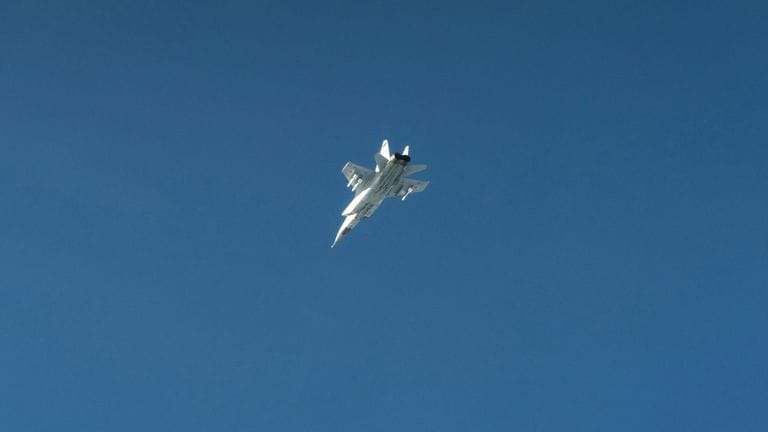

世界苦茶09月20日新闻 | 39条 | 习特通话确定APEC会面

习特通话确定APEC会面 | 美大幅涨H1B签证费用 | 传特朗普拒绝台湾4亿军援 | 俄罗斯军机侵爱沙尼亚挑衅北约 | 特朗普威胁批评他将停发电视牌照 | 匈牙利跟随美国将ANTIFA定位恐怖组织
苦茶数据
美元兑人民币：7.11（昨日7.11，前日7.10）
美元兑日元：147.90（昨日147.56，前日147.36）
上证指数：休市（昨日3820，前日3828）
标普500指数：休市（昨日6664，前日6631）
比特币：115553（昨日116839，前日117339）
布伦特原油：66.68（昨日67.31，前日67.70）
中国新闻
• 北影协寻访风波致歉 ：中国北京电影家协会日前公告寻访失联会员，名单包括知名演员邓超、宋春丽等人，引发热议。协会道歉并澄清这些会员并非失踪，而是留下的联系方式失效。北京电影家协会星期四发布关于寻访失联会员的公告，公示的失联名单中包括宋春丽、邓超、郭晓冬、李乃文、刘琳等知名演员，并称公告期满一个月仍未与协会取得联系并反馈信息的会员，将视为自动退会。名单引发中国网民关注，协会同日向红星新闻澄清，公告并非指名单中的会员失踪，而是它们入会时留下的联系方式已失效，导致协会无法联系他们。发布公告的目的是请这些会员主动重新与协会建立联系。
• 青海锂盐企多年埋危废 ：中国青海一家化工企业被曝长期非法处置工业危险废物，且为应对中央环保督察进驻，将已偷埋的万吨危废挖出并易地填埋。当地政府已成立调查组到现场核查。中国官媒新华社旗下《经济参考报》调查发现，位于青海省海西州大柴旦的青海柴达木兴华锂盐有限公司被举报非法掩埋大量危废。兴华公司主要生产氯化锂和硼酸等化学物质，过程中产生的大量危废依法须经有资质的危废经营单位处置。但是据公司内部人士透露，为了节省费用，兴华公司从建成投产至2023年，都在厂区附近简单填埋、擅自违法处理危废。据悉，因公司持续多年将垃圾填湖，附近面积133公顷的湖已基本被填平。
• 李强将赴联大发言 ：中国总理李强将在下周赴纽约出席联合国大会一般性辩论及相关高级别活动。中国外交部星期五在官网宣布，李强将于下星期一至下星期五赴纽约出席第80届联合国大会一般性辩论。李强还将在这期间出席中国方面主办的全球发展倡议高级别会议等活动，并同联合国秘书长及有关国家领导人举行会晤。
• 云海肴创始人赵晗逝 ：中国知名云南菜品牌云海肴创始人赵晗因突发心梗去世，年仅40岁。据正在新闻报道，赵晗星期四下午2时43分在昆明同仁医院医治无效不幸逝世。家属发布的讣告显示，赵晗的遗体告别仪式定于星期六早上11时在昆明市殡仪馆“慎远厅”举行。家属恳请亲友在10时半前抵达，送别最后一程。
• 中方警告巴新防务约 ：针对澳大利亚与巴布亚新几内亚计划签署互助防务条约，中国驻巴新大使馆警告，不要损害中国的利益和主权，并呼吁巴新保持独立自主，继续推动与中国的合作。据法新社报道，澳洲与巴新本周就防务条约文本达成一致，双方承诺在遭受武装攻击时相互防卫。中国驻巴新大使馆发言人星期四说，中国尊重巴新与其他国家签署协议的权利，但协定不应具有排他性，也不应限制巴新与其他国家合作，更不能针对第三方或损害中国的合法权益。
• 习或时隔11年访韩 ：韩国外交部官员星期五表示，韩中正以下月在庆州举行的亚太经合组织领导人非正式会议为契机，就安排总统李在明同中国国家主席习近平举行双边会谈的事宜协调沟通。如若敲定，这将是习近平时隔11年再度对韩国进行过国事访问。据韩联社报道，两国有关部门正就会谈地点和时间进行协调沟通。中韩元首会谈地点方面，考虑到庆州缺乏适合双边会谈的场所，因此会谈在首尔举行的可能性较大。会谈时间则可能选在APEC峰会开幕的10月31日前后，双方正就此方案进行讨论。
• 中国与太平洋岛国警务合作 ：中国国务委员、公安部部长王小洪表示，中国和太平洋岛国警务执法部门不断积累互信，持续推进合作，北京愿同太平洋各岛国进一步加强各层级沟通交流，深化警务执法领域合作，持续提升岛国警方自主维护秩序、安全和社会稳定的能力。据中新社报道，中国－太平洋岛国第四次执法能力与警务合作部级对话星期四在江苏连云港举行，王小洪与汤加警察部长皮乌卡拉担任共同主席。王小洪在主旨讲话中指出，中国和太平洋岛国警务执法部门围绕“让合作更专业、更高效、更友好，让岛国更安全”的主题，不断积累互信，持续推进合作，取得诸多务实成果。
• 翟欣欣一审判12年 ：中国官方通报，敲诈勒索逼死前夫的女子翟欣欣，一审被判监12年。据北京海淀法院微信公众号消息，北京市海淀区法院星期五对翟姓被告涉嫌犯敲诈勒索罪刑事附带民事诉讼一案依法公开宣判，以敲诈勒索罪判处翟姓被告有期徒刑12年，并处罚金10万元人民币，判决翟姓被告赔偿附带民事诉讼魏姓原告等人经济损失共计7万余元。法院审理查明，翟姓被告2017年3月与苏姓被害人确定恋爱关系。两人同年5月购买海南省一处房产，总价319万余元，苏姓被害人支付购房首付款199万余元。同年6月7日，两人登记结婚。
• 习特通话多项进展 ：习近平特朗普9月19日通电话。通话持续两个多小时，是务实、积极、建设性的。两人将再次通话，然后在韩国APEC会面。明年初特朗普访华，习近平则将在合适时访美。双方就经贸、芬太尼、俄乌停火的必要性、批准TikTok协议等议题上取得进展。习近平说：最近的磋商平等、尊重、互惠，可继续处理问题，争取双赢结果。美方应避免采取单方面贸易限制措施，防止冲击多轮磋商取得的成果。在TikTok问题上，中国政府尊重企业意愿，乐见企业在符合市场规则基础上做好商业谈判，达成符合中国法律法规、利益平衡的解决方案。希望美方为中资提供开放、公平、非歧视的营商环境。
亚太印太新闻
• 特朗普據報拒绝批准对台军事援助方案： 《华盛顿邮报》周四报道，美国总统唐纳德·特朗普在最近几个月与北京就贸易和可能的峰会进行谈判期间，拒绝批准向台湾提供4亿美元的军事援助。此举将标志着美国对这座面临中国持续入侵威胁的民主岛屿政策的重大转变。一位白宫官员告诉《邮报》，援助方案的决定尚未最终确定。特朗普与中国国家主席习近平定于周五通话，这是这位79岁的共和党人重返白宫以来的第二次通话。此次电话会谈正值双方寻求在关税和TikTok视频应用交易上达成妥协之际。美国自上世纪70年代末转而承认中国以来，虽然不再承认台湾，但一直是台北最重要的支持者和最大军援供应国。在前总统乔·拜登任内，美国批准了超过20亿美元的对台军援。但《邮报》指出，特朗普“不支持在没有付款的情况下提供武器，这一偏好在对乌克兰的态度上也同样表现出来”。
• 韩中谋APEC期间会谈 ：韩中两国正以10月在庆州举行的亚太经合组织领导人非正式会议为契机，推进两国首脑举行双边会谈的事宜，若日程敲定，习近平访韩的性质可能升级为国事访问。韩联社星期五引述不具名韩国外交部官员如上表述，并指两国有关部门目前正就韩国总统李在明与中国国家主席习近平会谈的地点和时间进行协调沟通。报道称，考虑到庆州缺乏适合双边会谈的场所，会谈在首尔举行的可能性较大，时间方面，双方正讨论在APEC峰会开幕的10月31日前后举行会谈的方案。
• 台美签百亿农产采购 ：台湾官方通报，台美签订意向书，台湾将在未来四年花超百亿美元采购美国农产品。据台驻美代表处官网消息，在台湾农业部长陈骏季、台驻美代表俞大㵢和16名美国参众议员见证下，台湾农产品贸易访问团与美国谷物业者签署三份采购意向书，规划在2026年至2029年采购总值超过100亿美元的美国黄豆、玉米、小麦和牛肉。台湾持续推动与美国互惠互利的经贸关系，今年3月签署关于阿拉斯加液化天然气买卖暨投资意向书，5月筹组全球最大代表团赴华府参与选择美国投资高峰会。这次邀请台湾大宗谷物及食品业者与相关公协会组团访问美国，扩大采购美国农产品。
• 韩拟先解签证再投资 ：韩国外交部长赵显表明，政府将努力解决韩国工人在美国签证方面面临的问题后，才推进一项3500亿美元的投资计划。赵显星期五提及的计划是韩美双边贸易协议的一部分。韩国产业通商资源部通商交涉本部长吕翰九结束美国行程后星期五回国，他在抵达仁川机场后对记者说，访美期间会见美国贸易代表格里尔和国会主要人士，旨在敦促经贸谈判取得进展。
• 泰王批准阿努廷内阁 ：泰国国王哇集拉隆功已批准总理阿努廷的新内阁人选。路透社引述《皇家公报》报道，这项批准正式使阿努廷的内阁能够在向议会提交政策声明之前在国王面前宣誓，这是部长们就职前的最后一步。此前，新华社引述泰国公共电视台9月6日的报道说，泰国当选首相阿努廷6日开始组建少数派内阁。
• 台拟建LEO卫星保障网 ：台湾的国家太空中心主任吴宗信说，为保障在与中国大陆潜在冲突时的网络和电话服务，台湾必须尽快发射自己的卫星。据法新社报道，吴宗信受访时说，如果海底电缆被破坏或切断，台湾至少需要150颗低轨道卫星来保障基础通信韧性。目前，台湾尚无这类卫星。他说：“我们需要建立自己的技术，但正如大家所知……时间紧迫，我们必须加快速度。”
科技新闻
• 金正恩推AI无人武器 ：朝鲜领袖金正恩星期四指示有关部门，引进人工智能来提升无人武器的作战能力。朝中社周五发布的照片显示，金正恩周四在一处未公开地点视察新型作战与侦察无人机的测试工作。朝鲜无人机技术水平尚不明朗，但金正恩多次实地视察无人机研发工作，显示他把无人机视为国家军事战略核心支柱。
• 字节将依法推进TikTok ：TikTok中国母公司字节跳动在中美元首通话后称，将按照中国法律要求推进TikTok相关工作。字节跳动星期六凌晨在官方微信公众号发布公告称，字节跳动将按照中国法律要求推进相关工作，让TikTok美国公司继续服务好广大美国用户。美国总统特朗普星期五晚与中国国家主席习近平通电话，这是中美元首今年以来第三次通话，两人上一次通话是在6月5日。
• 特朗普宣布，批准TikTok协议 ：美国总统特朗普星期五晚与中国国家主席习近平通电话后宣布，他与习近平批准了短视频平台TikTok在美运营协议。特朗普还说，两人将在亚太经合峰会于韩国举行期间会晤，而他将于明年初访华，习近平将在适当时候访美。中国官媒新华社的通稿则称，习近平在通话中呼吁美国避免采取单方面贸易限制措施，并表示在TikTok问题上，中国政府尊重企业意愿，乐见企业做好商业谈判，达成“符合中国法律法规、利益平衡”的解决方案。新华社先于星期五晚上约8点，发出中美元首通电话快讯，接近11点时发出详讯。特朗普则在晚上接近11点40分，在社媒平台发布通话结果。
• 小米召回11.69万SU7 ：中国消费电子产品巨头小米召回逾11万辆电动汽车SU7，原因是部分车辆在辅助驾驶开启时对特殊场景的识别和预警可能不足，存在碰撞风险等安全隐患。中国国家市场监督管理总局星期五在官网公告，小米汽车向国家市场监督管理总局备案了召回计划；决定自即日起，召回2024年2月6日至2025年8月30日生产的部分SU7标准版电动汽车，共计11.69万辆。公告显示，这次召回范围内部分车辆在L2高速领航辅助驾驶功能开启的某些情况下，对极端特殊场景的识别、预警或处置可能不足，若驾驶员不及时干预可能会增加碰撞风险，存在安全隐患。 （翻評：這是軟召回，就是更新系統就行，比起召回，感覺更像是一種營銷。）
• 美团试点现制现炒信息展示栏满足知情权： 今日，有消费者反馈称，在美团、大众点评App上，出现了一些承诺 “热菜现制现炒” 的餐饮店。对此，美团餐饮相关产品负责人回应表示，餐饮商家 “热菜现制现炒” 信息栏目前正处于试点阶段，主要是为了满足消费者对门店信息的知情权，同时，也帮助“现制现炒”的商家更好、更全面地在线上向消费者展示餐厅。正式上线后，门店可以通过商家后台随时发布店内热菜 “现制现炒” 信息，向消费者呈现后厨动态。据悉，美团后续还将增加更多信息展示功能，供商家展示线下门店的真实信息，满足消费者知情需求。
• 美政府预计将从TikTok交易获得巨额费用： 特朗普政府预计将向投资者收取一笔数十亿美元的费用，作为推动其接管TikTok美国业务的复杂协议的一环。参与TikTok交易的投资者将向政府支付这笔费用，作为政府出面与中方斡旋并促成协议的回报。美国总统特朗普和中国领导人习近平周五批准了该交易的初步框架。这些知情人士表示，交易谈判正在继续推进，这笔费用的最终安排和确切金额尚未敲定。特朗普周五在椭圆形办公室表示，交易尚未完全谈妥，但我们将有所收获。考虑到这笔交易的规模以及政府投入的资金和精力，获得报酬是合理的。此前一天他曾表示，我可不想与这笔钱失之交臂。
财经新闻
• 参院否决拨款案 ：美国国会参议院否决众议院通过的一项临时拨款法案，推高部分联邦政府机构因资金耗尽而“停摆”的风险。共和党控制的众议院星期五以微弱优势通过由共和党起草的临时拨款法案，试图让联邦政府运转资金可以维持至11月下旬。但这项法案当天下午在共和党占多数的参议院没能过关。民主党人批评共和党提出的临时拨款法案忽视医保优先事项，共和党人则拒绝让步，坚持推动一项简单的拨款法案以维持政府运作至11月21日，辩称法案可为进一步谈判争取时间。新华社指出，美国联邦政府资金将在9月30日午夜耗尽，若两党届时不能协商一致，部分政府机构将面临“停摆”。
• 上海优化房产税试点 ：中国上海对个人住房房产税试点政策进行优化调整，符合条件的上海市居住证持有人在新购住房时，可暂免房产税。上海市财政局星期五在官网发布《关于优化调整本市个人住房房产税试点有关政策的通知》。通知指出，持有上海市居住证并在本市工作生活的符合国家和本市有关规定引进的高层次人才、重点产业紧缺急需人才，和持有本市居住证满三年并在本市工作生活的购房人，在本市新购住房，且住房属于家庭第一套住房的，暂免征收房产税。
• 马来西亚8月出口微增 ：马来西亚出口连续两个月增长，8月份出口额达1316亿令吉，同比微幅增长1.9%。但是随着美国8月7日起的关税调整，影响了贸易需求，马国8月份对美出口同比大跌25.5%。与此同时，随着国内消费情绪疲弱，以及非交通零部件中间品的需求减弱，马国8月份的进口业同比萎缩了5.9%，至1155亿令吉。
• 欧企稀土短缺停产 ：中国欧盟商会披露，中国稀土供应延迟，令欧洲企业因原料短缺，被迫停产。据彭博社报道，中国欧盟商会星期四发表声明称，今年8月，欧洲企业因稀土产品短缺已出现七次停产，本月预计还将有46次。声明并未说明受影响设施的规模或性质。商会副主席安德烈亚在上海的新闻发布会上说，“虽然情况有所进展，但速度极其缓慢”，并指稀土供应瓶颈是会员企业目前面临的最大问题。
• 美财长评人民币走势 ：美国财政部长贝森特说，他对今年人民币兑美元的走势并无异议，但认为人民币兑欧元的贬值将对欧洲经济构成挑战。综合路透社和彭博社报道，贝森特星期一在马德里受访，谈及外界关于中国今年存在“机会性贬值”的说法时说：“他们没有对美元这么做。今年人民币兑美元实际上更强势，人民币兑欧元却跌至历史低点，这对欧洲人来说是个问题。”贝森特还透露，美国对中国进口商品加征关税正在压低美方贸易逆差，今年中美贸易额下降14%，而中欧贸易额则上升6.9%。
俄乌战争
• 特朗普促停购俄油 ：美国总统特朗普说，俄罗斯总统普京“真的让我失望”，他坚称，如果盟友希望美国进一步介入并向克里姆林宫施压以结束在乌克兰的战争，就必须停止购买俄罗斯的石油。特朗普在伦敦与英国首相斯塔默会晤后于星期四说：“很简单，如果油价下降，普京就会退出。他将别无选择，他会退出那场战争。”彭博社引述特朗普说，他愿意考虑采取其他措施惩罚普京，但这些举措将取决于盟友是否停止购买俄罗斯能源。他说：“我愿意做别的事情，但前提是我所为之奋斗的人不能还在从俄罗斯买油。”
• 普京下令为俄罗斯未来领导必須是老兵： 俄罗斯总统弗拉基米尔·普京表示，国家下一代政治领导层必须是乌克兰战争的老兵。普京在与国家杜马不同派别的会议上发表讲话，谈到乌克兰战争老兵参与选举的问题。在普京的俄罗斯，几乎没有真正的异议或政治反对派存在，而与其关系密切的“统一俄罗斯党”牢牢掌控局面。他的最新要求表明，在普京治下占主导地位的强硬俄罗斯民族主义进一步根深蒂固，并推动莫斯科与西方的“新冷战”文化，这种氛围可能在他卸任后依然延续。据俄通社塔斯社报道，普京用俄语表示：“我们必须寻找、发现并推举那些无畏地为祖国服务、愿意冒着健康甚至生命危险的人。这样的人应被提拔到领导岗位。他们将是我们的接班人。这是我们必须考虑的问题。感谢你们推举了这些人。” （翻評：根本不相信。）
• 北约回应俄罗斯军机“侵犯”爱沙尼亚领空： 爱沙尼亚政府表示，事件涉及三架俄罗斯米格-31战斗机，它们在芬兰湾上空飞行，总计12分钟。爱沙尼亚外交部已召见一名俄罗斯外交官。北约发言人称，这些俄罗斯战机“侵犯了爱沙尼亚领空”，“北约立即作出回应并拦截了俄方飞机”。发言人补充说：“这是又一个鲁莽的俄罗斯行为的例子，也显示了北约的应对能力。”美国总统特朗普则表示，这一据称的入侵“可能带来大麻烦”。
国际新闻
• 美拟大幅涨H-1B费 ：美国官员证实，美国总统特朗普将大幅提高H-1B签证的费用，这类签证广泛用于高科技人才入境，尤其是来自印度的人才。美国商务部长卢特尼克星期五说：“每年10万美元用于H1-B签证，所有大公司都同意了。我们已经和他们谈过了。”路透社引述他说：“如果你要培训一个人，你就应该培训我们国家一流大学的应届毕业生。培训美国人。别再引进别人来抢我们的工作了。”提高H-1B签证的费用是特朗普更大规模打击移民政策的一部分。自重返白宫以来，特朗普大力打击移民，但迄今为止尚未针对硅谷长期依赖的签证。 （翻評：如果在美國，千萬不要離境。）
• 加援港计划现学历造假 ：加拿大媒体报道，加拿大援助香港人计划不少申请被拒，与学历造假有关。加拿大广播公司星期四报道，加拿大2020年11月起推行的一项援助香港人计划被滥用。报道引述联邦法院裁决显示，有至少七起案件涉及学历造假。移民官员质疑申请人以仓促发出的文凭和硕士学位提出申请，且实际学术认知存疑，最终以失实陈述为由拒绝向这些申请人批发赴加拿大居留签证。
• 法禁公共建筑挂巴旗 ：法国内政部已下令地方省长，下周不得在市政厅及其他公共建筑上悬挂巴勒斯坦旗帜，届时法国将在联合国大会上正式承认巴勒斯坦国。法新社报道，星期五看到的一份内政部电报的副本指出：“公共服务的中立原则禁止此类展示。”电报称，任何市长决定升挂巴勒斯坦国旗的行为，均应提交法院裁定。
• 巴俾路支连爆致11死 ：巴基斯坦官员星期五通报，该国动荡不安的俾路支省星期四分别发生两起爆炸袭击事件，造成至少11人死亡。法新社报道，俾路支省与阿富汗及伊朗接壤，近年来武装暴力活动加剧，巴基斯坦政府也持续展开大规模反恐清剿行动。其中一起袭击发生在该省西南部达什特地区，靠近伊朗边境。一名自杀式袭击者驾驶装有爆炸物的汽车冲向一支准军事部队车队。
• 美参院一口气批48人 ：美国国会参议院以51票支持、47票反对的表决结果一次批准了48名由总统特朗普提名的官员人选。共和党占多数的参议院星期四表决批准了特朗普提名的一系列人选，其中前福克斯新闻主持人金伯莉·吉尔福伊尔出任美国驻希腊大使，众议院前议长纽特·金里奇之妻卡莉斯塔·金里奇出任美国驻瑞士和列支敦士登大使，前纽约州众议员布兰登·威廉姆斯出任美国能源部负责核安全的副部长。参议院的共和党议员投下赞成票，民主党人投下反对票，另有两名共和党议员没有投票。议员批准的提名人选包括国防、农业、住房，内政与运输等部会官员。
• 美再否决加沙决议 ：美国再次在联合国安全理事会否决加沙问题决议草案。安理会星期四对一项由10个非常任理事国提出的涉加沙停火决议草案进行表决。新华社报道，草案要求在加沙地带立即无条件永久停火、立即无条件以体面方式释放所有在押人员，要求以色列立即无条件解除对人道主义援助进入加沙地带和在加沙地带分发援助物资的限制。安理会15个成员中14个投了赞成票，常任理事国美国行使否决权，导致决议草案未获通过。
• 特请最高院罢免库克 ：美国总统特朗普已请求最高法院允许他在诉讼审理期罢免联邦储备理事会理事丽莎·库克，这使得最高法院正式卷入了有关央行独立性的争议。美国司法部星期四向最高法院提出紧急申请，要求至少暂时终止华盛顿联邦法官允许库克继续留任的裁决。这项请求是在美联储召开9月政策会议之后提出的。彭博社报道，库克的律师当天提交回应，敦促大法官驳回特朗普的请求。他们指出，即便最高法院只是暂时叫停联邦法官的裁决，也“可能会破坏美国金融体系的稳定”，“对美国经济构成严重威胁”。
• 特威胁审查电视牌照 ：美国总统特朗普表明，如果美国广播电视网络对他批评过头，应对其牌照进行审查，相当于对媒体自由发出最广泛的威胁。特朗普星期四由伦敦返国时在空军一号上对记者说：“电视网络那些晚间节目所做的就是攻击特朗普，我觉得也许应该吊销他们的牌照。”彭博社报道，特朗普为美国广播公司决定无限期停播吉米·坎摩尔的节目进行辩护时发表上述讲话，这位深夜节目主持人此前就共和党活动人士查理·柯克枪击事件发表的言论引发强烈反应。几天前特朗普还对《纽约时报》提起150亿美元的诽谤诉讼。
• 塔利班禁止阿富汗大学使用女性著作： 塔利班政府已将女性撰写的书籍从阿富汗大学的教学体系中移除，作为一项新禁令的一部分，同时还禁止教授人权与性骚扰相关内容。约140本由女性撰写的书籍（包括《化学实验室中的安全》）被列入680本“有问题”的书籍名单，理由是其内容“违背伊斯兰教法与塔利班政策”。大学方面进一步被告知不再允许教授18门学科，一名塔利班官员称这些学科“与伊斯兰教法原则和体制政策相冲突”。这一法令是塔利班自四年前重掌政权以来一系列限制措施中的最新一步。就在本周，塔利班最高领袖下令在至少10个省份禁止光纤网络，官员称此举是为了防止不道德行为。虽然这些规则影响到生活的方方面面，但女性和女孩受到的打击尤为严重：她们被禁止接受六年级以上教育，而她们最后一条职业培训途径也在2024年底被切断，当时助产学课程被悄然关闭。
• 匈牙利将跟随特朗普，将“反法西斯运动”列为恐怖组织： 匈牙利总理欧尔班周五表示，匈牙利将效仿美国总统唐纳德·特朗普周四宣布的政策，把“反法西斯运动”列为恐怖组织。“反法西斯运动”是一个松散联系的极左翼活动者和组织的统称，他们在示威中主要抵制法西斯主义者、法西斯分子和新纳粹分子。它更像是一种意识形态，而不是一个有组织的团体，尽管其中一些人采取过激进手段。右翼民粹主义者、特朗普的坚定盟友欧尔班在周五接受国家电台采访时表示，他对特朗普宣布计划在美国将antifa指定为“主要恐怖组织”的消息感到“高兴”。欧尔班称：“Antifa确实是一个恐怖组织。在匈牙利，我们也到了该把这类组织列为恐怖组织的时候了，效仿美国模式。”